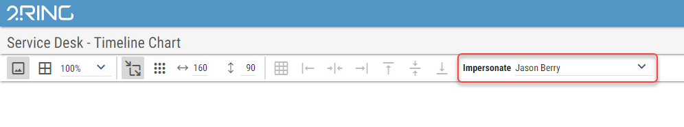
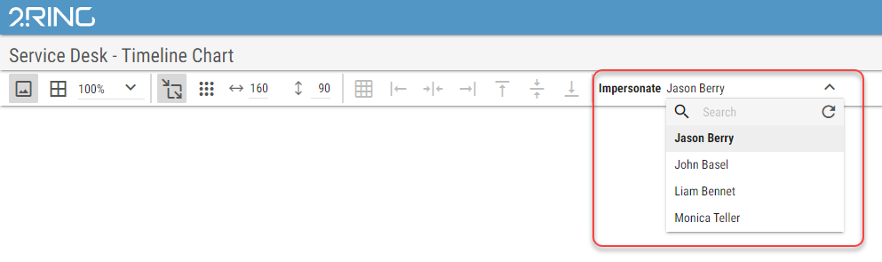

Impersonating¶
By impersonating, user can view the currently opened layout exactly as another agent sees it. Dynamic filters are currently the only thing that affects displayed values in the layout based on the logged in user. For more information about dynamic fiters, see Dynamic Filters chapter. User can impersonate only agents defined in the same business unit (including additional readers and administrators).
Logged in user can impersonate another user in the layout editor using following control.
Figure 1: Impersonate button:
After clicking on the button, user can select a specific agent from the list of available agents to impersonate.
Figure 2: Impersonate dropdown:
